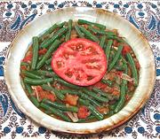

|
Green Beans with Olive OilPalestine - Fasolia bi Zait | ||||
| Serves: Effort: Sched: DoAhead: |
4 side *** 1 hr Yes |
This simple side dish or mazzeh is very popular in Palestine, and also (with variations) in the rest of the Levant. It can be served warm or at room temperature, and reheats easily. | |||
|
|
12 13 10 4 3/4 1/2 2 1 1/4 ----- |
oz oz oz cl t t T t t --- |
Green Beans Tomatoes (1) Onions Garlic Cumin Allspice Olive Oil Salt Pepper -- Garnish Olive Oil, ExtV |
Prep: - (30 min)
|